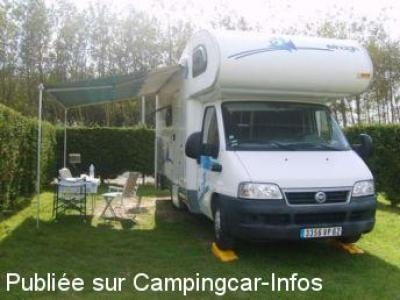

ACS = Aire de services sur camping acceptant le passage pour les services de :
OYE PLAGE
(N° 427)
Accès/adresse :
525 route des Dunes
Camping Clairette **
62215 OYE PLAGE
Camping Clairette **
62215 OYE PLAGE
Latitude : (Nord) 50.99647° Décimaux ou 50° 59′ 47′′
Longitude : (Est) 2.04965° Décimaux ou 2° 2′ 58′′
Tarif : 2013
Forfait : 5 €
Nuitée 2 adultes : 13,50 €
Adulte supplémentaire : 3,95 €
Enfant : 2,95 €
Électricité : 4 €
Services C-C de passage 5 €
Type de borne : Autre
Services :


Lave-linge
Autres informations :
Ouvert du 15/01 au 15/12
50 emplacements
Tél : +33 (0)321 358 351
GSM : +33 (0)614 229 271

Le 02/10/2007 par
de
Maryline Lucas
le 12/05/2013 :
nous y avons passé une nuit très tranquille. Accueil très sympathique.
nous y avons passé une nuit très tranquille. Accueil très sympathique.
de
Félix
le 20/02/2013 :
Nous venons d'y passer 2 nuits.
Accueil super.
Très beaux emplacements mais attention seulement 10 places pour le passage.
Nous venons d'y passer 2 nuits.
Accueil super.
Très beaux emplacements mais attention seulement 10 places pour le passage.
de
verniest andre
le 07/10/2007 :
avons passés le week-end du 6-7 octobre,excellent accueil,emplacements bien délimités pour les cc.a proximité de la réserve naturelle,bonnes ballades. prix raisonnable pour les services,a recommander.
avons passés le week-end du 6-7 octobre,excellent accueil,emplacements bien délimités pour les cc.a proximité de la réserve naturelle,bonnes ballades. prix raisonnable pour les services,a recommander.
de
laulauce
le 02/10/2007 :
avons passe le week du 29-30 septembre
prix 2 adult CC avec vidange 13€
enfant +7ans 3,90€
elect 4,00 €
bon week patron agreable
avons passe le week du 29-30 septembre
prix 2 adult CC avec vidange 13€
enfant +7ans 3,90€
elect 4,00 €
bon week patron agreable
de
Herman Struyf Anvers Belgique
le 26/02/2007 :
j'y suis passé samedi 24 février. Dame très gentille. Vidanger sans aucun problème à l'intérieur du camping.
Le prix est à 5 euros.
il faut pas se tromper de camping..il y en à trois, l'un à côté de l'autre.
j'y suis passé samedi 24 février. Dame très gentille. Vidanger sans aucun problème à l'intérieur du camping.
Le prix est à 5 euros.
il faut pas se tromper de camping..il y en à trois, l'un à côté de l'autre.